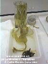

Una zona rizodial ramificada (hapterios*), un estipe cilíndrico y un
filoide palmeado (lámina)


Fijación mediante hapterios; estipe
corto y aplanado
| Página de procedencia: | Algas_pardas.htm |  |
|
| Contenido de esta página: | 1.- Características del orden | ||
| 2.- Cuadro Resumen | |||
| 3.- Más datos: catálogo y claves, familias: | #Laminariáceas |
||
| Para las referencias véase | Algas_bibliografia.html | #Filariáceas |
|
| Para los términos véase: | Algas_Introduccion.htm |
| Géneros |
Especies |
Talos |
Imágenes |
|---|---|---|---|
| Laminaria |
Talo parenquimático de
gran tamaño 1-6 m, diferenciado en tres partes: Una zona rizodial ramificada (hapterios*), un estipe cilíndrico y un
filoide palmeado (lámina)
|
|
|
| Saccorhiza |
Zona rizodial bulbosa, con
hapterios en la parte inferior, estipe plano y filoide palmeado |
|
|
| Phyllariopsis |
Talo de hasta 1 m, con
lámina entera o desgarrada, cubierta de punteaduras oscuras
(zonas pilosas) Fijación mediante hapterios; estipe
corto y aplanado
|
véase Llimona & al. 1985: 245 |
|
| Fijación
por un disco carnoso; estipe corto y redondeado |
Saccorhiza
Pylaie, 1829.
Una sola especie atlántica y mediterránea.
| 1. |
Pie ramificado, estipe aplanado |
P. brevipes |
| 1. |
Pie en forma de disco, estipe no aplanado |
P. purpurascens |